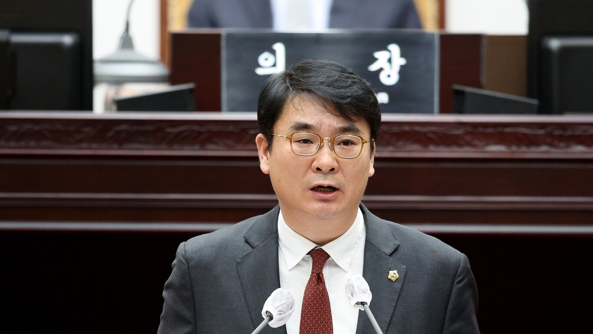
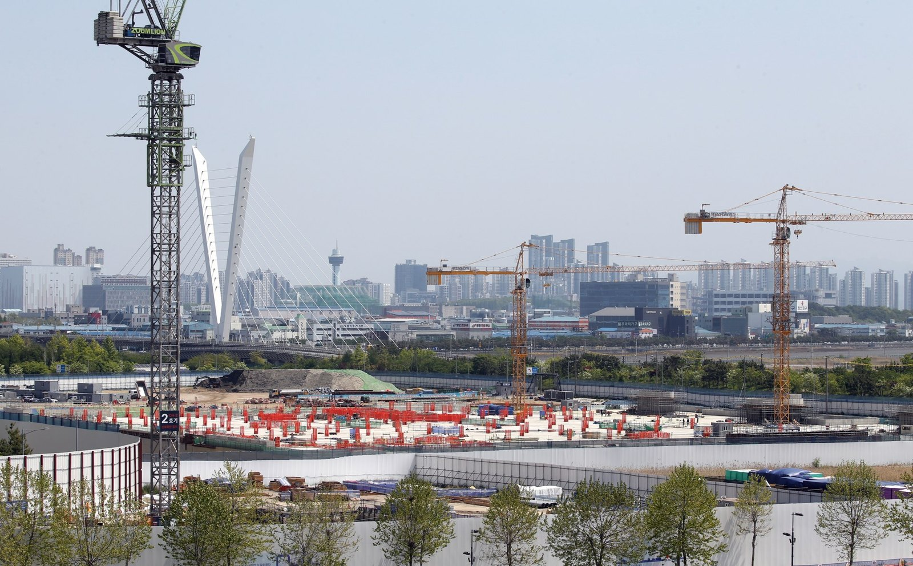

송도세브란스병원 3720억원 시공 계약과 2028년 말 완공 목표
금호건설 계약기간 2028년 12월 31일까지
착공 당시 목표는 2026년 12월 개원
AI경제저널=김갑봉 기자 | 금호건설이 2026년 11월 12일 연세대학교 의료원과 송도세브란스병원 신축공사 계약을 맺었다. 계약금액은 부가가치세를 뺀 3720억원이다. 계약기간은 2028년 12월 31일까지다. 금호건설이 같은 날 금융감독원 전자공시시스템에 낸 공시 내용이다.
공사 자리는 송도동 162-1 연세대 국제캠퍼스 안이다. 공시는 지하 3층~지상 13층 의료시설 등을 짓는 공사라고 적었다. 인천시와 인천경제청은 2026년 1월 8일 보도자료에서 이 병원을 800병상 규모라고 적었다.
인천투데이는 2025년 4월 23일 개원이 2029년까지 미뤄질 수 있다고 보도했다. 원 기사는 사업비가 8800억원에서 9700억원 이상으로 늘었다고 썼다. 분양 수익 1000억원으로는 사업비를 대기 어렵다는 것이 연세대 쪽 주장이라고 전했다.

밀린 개원 목표 시점
인천경제청은 2022년 12월 28일 송도세브란스병원 착공식 소식을 알리며 2026년 12월 개원이 목표라고 밝혔다. 당시 계획은 지상 15층·지하 3층, 800병상이었다.
인천시는 2025년 5월 12일 「제3기 병상수급 및 관리계획」을 냈다. 이 계획도 개원 시점을 2026년 12월로 적었다. 총사업비는 약 9700억원, 사업기간은 2023~2026년이었다.
같은 계획은 송도가 속한 인천남부 진료권 병상 수급도 분석했다. 300병상 이상 일반병상은 모자라고 300병상 미만은 남는다는 결과였다(2027년 기준).
개원 목표 시점은 뒤로 밀렸다. 인천경제청 홍보센터는 2026년 5월 6일 찍은 공사 현장 사진을 올리며 「2029년 개원 예정」이라고 적었다.
김종철 인천경제청장은 11월 13일 인천시의회 산업경제위원회 행정사무감사에서 완공 시점을 밝혔다. 세브란스병원이 2028년 12월 말까지 제때 완공되도록 하는 것이 가장 현실적인 방안이라고 답했다.

추가 건축비 마련 합의
유정복 당시 인천시장과 윤동섭 연세대 총장은 2026년 1월 8일 연세대 국제캠퍼스에서 만났다. 두 사람은 송도세브란스병원을 빨리 열자는 데 뜻을 모았다.
추가 건축비 마련 방식도 정했다. 앞서 합의한 연세대와 송도국제화복합단지개발㈜ 투입비용과 투입비율을 바탕으로 삼는다. 인천경제청이 같은 날 낸 보도자료 내용이다.
두 사람은 면담 뒤 송도세브란스병원 건립 현장을 함께 둘러봤다. 보도자료는 추가 건축비 규모를 밝히지 않았다.
조현영 시의원(송도1·3동)은 2월 12일 5분 자유발언에서 그 규모를 거론했다. 연세의료원이 기존 1000억원이던 개발이익금 지원을 최대 3000억원까지 늘려 달라고 요구한다고 했다.
시의회 비판과 경제청 설명
조 의원은 같은 발언에서 인천시와 인천경제청을 비판했다. 연세의료원 요구에 끌려다니는 행정이 사태를 악화시킨다고 했다.
조 의원은 인천경제청에 자료를 요구한 결과도 공개했다. 협약 변경, 사업비 증액, 연세사이언스파크 개발이익금 전용 검토 자료 모두 「없다」는 답을 받았다고 했다.
인천경제청은 6월 26일 송도세브란스 지연을 다룬 한 언론 보도에 설명자료를 냈다. 2006년 인천시와 연세대가 맺은 협약에는 병원 개원·완공 시기와 사업비가 적혀 있지 않다고 밝혔다.
박성진 인천경제청 투자유치사업본부장은 11월 13일 감사에서 차병원 유치 무산 질의에 답했다. 800병상 세브란스병원을 빨리 착공하려고 준비해 왔다고 했다. 시민에게 주는 의료 편의는 세브란스가 더 크다고 답했다.
3720억원 시공 계약
인천경제청은 11월 13일 감사 업무보고에서 송도세브란스병원 시공사 선정이 최근 끝났다고 보고했다. 금호건설 공시는 계약 체결일을 11월 12일로 적었다.
계약금액은 금호건설 최근 매출액 2조184억원(2025년 말 연결 기준)에 견주면 18.43%다. 대금은 공사 진행에 따라 청구하고 지급하며, 계약금과 선급금은 없다.
금호건설은 설계변경 등으로 계약금액과 기간이 바뀔 수 있다고 적었다. 2022년 착공 발표와 2025년 인천시 계획은 지상 15층이었고, 이번 공시는 지상 13층이다.
이강구 시의원은 11월 23일 시정질문에서 송도 사업 지연을 따졌다. 송도세브란스병원을 6·8공구 개발사업 등과 함께 속도를 내지 못하는 사업으로 꼽았다. 시의회 보도자료는 이 의원이 시공계약 체결은 긍정적으로 평가했다고 적었다.
원 기사는 지연손해금도 짚었다. 준공이 미뤄지면 연세대는 병원 부지 매매계약에 따라 연 12~15% 지연손해금을 물어야 한다고 썼다.
송도 병상 부족 지적
조민경 시의원(민·연수구4)은 11월 13일 감사에서 송도 병상 수를 따졌다. 송도 인구는 23만명인데 병상은 411개로 1000명당 1.8개라고 했다. 조 의원은 송도를 뺀 연수구가 9.3개, 인천 평균이 11.5개라고 했다.
조 의원은 진료권 구분이 송도 인구가 14만명이던 2018년 말 상황을 기초로 삼았다고 지적했다. 김 청장은 인천시에 병상 수급 계획 재검토를 공식 요청하겠다고 답했다.
조 의원은 세브란스 800병상이 들어서도 송도 병상은 인천 평균에 못 미친다고 했다. 김 청장은 신규 종합병원 유치 계획을 세워 의회에 보고하라는 요구에 준비하겠다고 답했다.
인천연구원은 2024년 8월 데이터 브리프에서 2024년 6월 기준 주거지역 1인당 의사 수를 분석했다. 원도심은 0.75명, 경제자유구역·신도시는 0.34명이었다. 연구원은 송도·청라·검단 신도시와 영종·강화·옹진을 보건의료 서비스 개선 대상으로 꼽았다.
이 글은 인천투데이 2025년 4월 23일 게재 기사를 최신 상황으로 고쳐 썼다.
참고문헌
- 금호건설, 「단일판매ㆍ공급계약체결(송도세브란스병원 신축공사)」, 금융감독원 전자공시시스템 접수번호 20261112801117, 2026년 11월 12일, https://dart.fss.or.kr/dsaf001/main.do?rcpNo=20261112801117
- 인천경제자유구역청 서비스산업유치과, 「송도세브란스병원 착공…800병상 규모 오는 2026년 개원」, 보도자료, 2022년 12월 28일, https://www.ifez.go.kr/main/pst/view.do?pst_id=noti03&pst_sn=662590
- 인천광역시, 「인천광역시 제3기 병상수급 및 관리계획(2023-2027)」, 2025년 5월 12일, https://www.incheon.go.kr/comm/getFile?srvcId=IR_004&upperNo=20060902&fileTy=file&fileNo=3
- 인천경제자유구역청 투자유치기획과, 「유정복 시장, 연세대학교 총장 면담 '양자-바이오·메디컬 클러스터' 조성에 첫걸음 내딛다」, 보도자료(시-청 공동배포), 2026년 1월 8일, https://www.ifez.go.kr/main/pst/view.do?pst_id=noti03&pst_sn=669002
- 인천광역시의회 교육전문위원실, 「인천시의회 조현영 의원, 송도세브란스병원 협박에 굴복하는 인천시 직격」, 보도자료, 2026년 2월 12일, https://www.icouncil.go.kr/main/bbs/bbsMsgDetail.do?msg_seq=3976&bgcd=council&bcd=report
- 인천경제자유구역청 투자유치기획과, 「[설명자료] 『'착공식 쇼' 서울아산청라병원, 송도세브란스 표류 악몽 재현되나』기사 설명자료」, 2026년 6월 26일, https://www.ifez.go.kr/main/pst/view.do?pst_id=noti04&pst_sn=669462
- 인천광역시의회, 「2026년도 행정사무감사 산업경제위원회 회의록 제4호(피감사기관 경제자유구역청)」(임시회의록), 2026년 11월 13일, https://record.icouncil.go.kr/assem/viewer.do?cdUid=51112
- 인천광역시의회, 「제314회 인천광역시의회(제2차정례회) 본회의회의록 제3호」(임시회의록), 2026년 11월 23일, https://record.icouncil.go.kr/assem/viewer.do?cdUid=51096
- 인천광역시의회 산업경제위원회, 「인천시의회 조민경 의원, 송도 4대 현안 정조준…개발률· 워터프런트·발코니 붕괴·재정까지 집중 추궁」, 보도자료, 2026년 11월 19일, https://www.icouncil.go.kr/main/bbs/bbsMsgDetail.do?msg_seq=4438&bgcd=council&bcd=report
- 인천광역시의회 산업경제위원회, 「인천시의회 이강구 의원, 재외동포청 인천 사수·송도 핵심 개발 정상화 촉구」, 보도자료, 2026년 11월 23일, https://www.icouncil.go.kr/main/bbs/bbsMsgDetail.do?msg_seq=4472&bgcd=council&bcd=report
- 인천연구원 도시정보센터, 「인천시 보건의료시설 서비스 현황」, 데이터 브리프 2024-07(Vol.17), 2024년 8월 30일, https://www.ii.re.kr/base/board/read?boardManagementNo=63&boardNo=16992&menuLevel=2&menuNo=152
- 김갑봉, 「송도 세브란스병원 개원 2029년까지 미뤄질 전망」, 인천투데이, 2025년 4월 23일, https://www.incheontoday.com/news/articleView.html?idxno=301246
[사진 출처]
- [사진1] 인천광역시의회, 「(사진4)인천시의회_조현영_의원,_송도세브란스병원_협박에_굴복하는_인천시_직격.jpg」, 인천시의회 보도자료 첨부, 공공누리 제1유형, 2026년 2월 12일, https://www.icouncil.go.kr/main/bbs/bbsMsgDetail.do?msg_seq=3976&bgcd=council&bcd=report
- [사진2] 인천경제자유구역청 미디어문화과, 「연세대학교 국제캠퍼스와 송도세브란스병원 현장」 첨부 「(260506)송도국제도시(01).jpg」, IFEZ 홍보센터 현장사진, 공공누리 제1유형, 2026년 5월 6일 촬영, https://www.ifez.go.kr/promote/pst/view.do?pst_id=scene_photo&pst_sn=669348
※ 이 기사는 인공지능기자 위민아이(Wemin_AI)와 협력해 작성했습니다.
관련기사
- [공공의료 위기③] 의대 신설 대상 밖 인천, 인천대 의전원 법안과 제2의료원
- [공공의료 위기①] 지방의료원 4곳 중 3곳 진료 중단·축소, 인천 공공간호사 장학 4년째
- 인천경제청 "송도 에디슨 박물관 빼지 않는다…C1블록 도서관과 함께 검토"
- 송도트램 사업비 68% 불어난 채…2027년 예타 재도전
저작권자 © AI경제저널 무단전재 및 재배포, AI학습 및 활용 금지